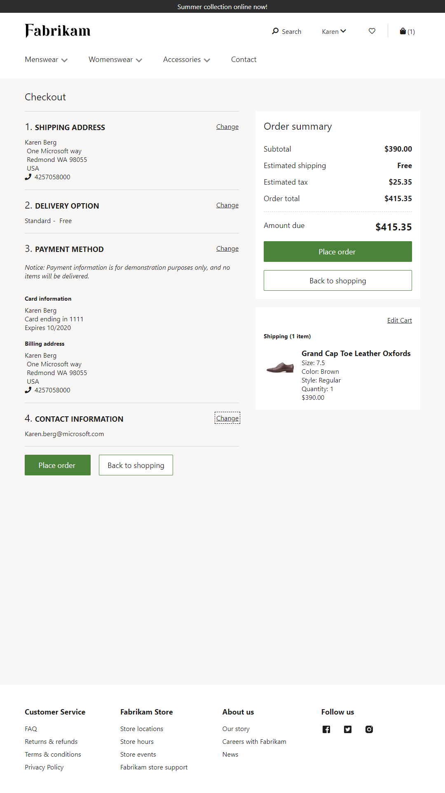

Auschecken-Modul
Important
Dynamics 365 Retail ist jetzt Dynamics 365 Commerce und bietet umfassende Handelsfunktionen für alle Kanäle – von E-Commerce über Shops bis hin zu Callcentern. Weitere Informationen zu diesen Änderungen finden Sie unter Microsoft Dynamics 365 Commerce.
In diesem Thema wird beschrieben, wie Sie ein Auscheckenmodul einer Seite hinzufügen und die erforderlichen Eigenschaften festlegen.
Übersicht
Ein Auscheckenmodul ist ein spezieller Container, der alle Module hostet, die erforderlich sind, um einen Auftrag zu erstellen. Der Bericht stellt einen schrittweisen Fluss dar, die ein Kunde verwendet, um die gesamten relevanten Informationen einzugeben, um eine Bestellung abzuschließen. Es erfasst die Versandadresse, die Versandmethode und die Rechnungsinformationen. Es enthält auch eine Bestellübersicht und andere Informationen, die sich auf eine Kundenbestellung beziehen.
Ein Auscheckenmodul rendert Daten basierend auf der Warkenkorb-Kennung Diese Kennung wird als Browsercookie gespeichert. Eine Einkaufskorb-Kennung ist erforderlich, um Informationen im Auscheckenmodul zu rendern, wie Artikel im Auftrag, im Gesamtbetrag und bei den Rabatten.
Das folgende Bild zeigt ein Beispiel eines Fabrikam-Checkoutmoduls auf einer Checkout-Seite.

Checkoutmodul-Eigenschaften
Ein Checkout-Modul zeigt eine Bestellübersicht an und bietet die Funktionalität zum Aufgeben einer Bestellung. Um alle Kundeninformationen zu erfassen, die erforderlich sind, bevor eine Bestellung aufgegeben werden kann, müssen dem Checkout-Modul zusätzliche Module hinzugefügt werden. Einzelhändler haben daher die Flexibilität, dem Checkout-Flow benutzerdefinierte Module hinzuzufügen oder Module basierend auf ihren Anforderungen auszuschließen.
| Eigenschaftenname | Werte | Beschreibung |
|---|---|---|
| Auftragsabschlussüberschrift | Überschriftentext und eine Überschriftsmarkierung (H1, H2, H3, H4, H5 oder H6) | Eine Überschrift für das Checkout-Modul. |
| Überschrift der Auftragszusammenfassung | Überschriftentext | Eine Überschrift für den Abschnitt "Auftragszusammenfassung" des Moduls. |
| Überschrift der Warenkorbpositionen | Überschriftentext | Eine Überschrift für Warenkorbpositionen, die im Checkout-Modul angezeigt werden. |
| Versandkosten für Positionen anzeigen | True oder False | Wenn diese Eigenschaft True ist, werden die Versandkosten, die für Positionen fällig werden, in den Warenkorbpositionen angezeigt Wenn die Funktion Kopfgebühr ohne Verrechnung in der Commerce-Zentralverwaltung aktiviert ist, werden die Versandkosten auf Überschriftsebene und nicht auf Positionsebene berechnet. Diese Funktion wurde in die Commerce-Version 10.0.13 aufgenommen. |
Module können im Auscheckmodul verwendet werden
Versandadresse – Dieses Modul ermöglicht einem Debitor die Postanschrift für einen Auftrag hinzuzufügen oder auszuwählen. Weitere Informationen zu diesem Modul finden Sie unter Versandadressmodul.
Das folgende Bild zeigt ein Beispiel eines Versandadressenmoduls auf einer Checkout-Seite.

Lieferoptionen – Dieses Modul ermöglicht einem Kunden, einen Liefermodus für einen Auftrag auszuwählen. Weitere Informationen zu diesem Modul finden Sie unter Lieferoptionsmodul.
Das folgende Bild zeigt ein Beispiel eines Lieferoptionsmoduls auf einer Kassenseite.
Containerabschnitt Auschecken – Dieses Modul ist ein Container, der mehrere Module aufnehmen kann, um einen Bereich innerhalb des Auscheckflusses zu erstellen. So können Sie alle zahlungsrelevanten Module innerhalb dieses Containers speichern, damit diese in einem Bereich angezeigt werden. Dieses Modul wirkt sich nur auf das Layout des Flusses aus.
Geschenkkarte – Dieses Modul ermöglicht es einem Debitor, für einen Auftrag mit einer Geschenkkarte zu bezahlen. Weitere Informationen zu diesem Modul finden Sie unter Geschenkkartenmodul.
Treuepunkte – Dieses Modul ermöglicht einem Debitor für einen Auftrag zu bezahlen, indem er Treuepunkte verwendet. Es bietet eine Übersicht der verfügbaren Punkte und ablaufenden Punkten der Debitor kann die Punktzahl auswählen, die er für die Zahlung verwenden möchte. Wenn der Debitor nicht angemeldet ist oder kein Treuemitglied ist oder wenn der Gesamtbetrag im Einkaufskorb 0 (null) ist, wird dieses Modul automatisch ausgeblendet.
Zahlung – Dieses Modul ermöglicht es einem Kunden, für eine Bestellung mit einer Kredit- oder Debitkarte zu bezahlen. Kunden können auch eine Rechnungsadresse für die von ihnen ausgewählte Zahlungsoption angeben. Weitere Informationen zu diesem Modul finden Sie unter Zahlungsmodul.
Das folgende Bild zeigt ein Beispiel für Geschenkkarten-, Treuepunkt-, Zahlungsmodule auf einer Checkout-Seite.

Kontaktinformationen – Dieses Modul ermöglicht einem Debitor die Kontaktinformationen (E-Mail-Adresse) für einen Auftrag hinzuzufügen oder zu ändern.
Textblock – Dieses Modul enthält ein beliebige Nachricht, die vom Content Management System (CMS) gesteuert wird. Kann beispielsweise eine Meldung enthalten, die lautet: „Für Probleme mit Ihrem Auftrag kontaktieren Sie 1-800-Fabrikam.“
Allgemeine Geschäftsbedingungen für den Checkout – Dieses Modul zeigt Rich Text mit den allgemeinen Geschäftsbedingungen und einem Kontrollkästchen für die Kundeneingabe. Das Kontrollkästchen ist optional und konfigurierbar. Die Eingabe wird vom Modul erfasst und kann als Überprüfung verwendet werden, bevor die Auftragserteilung ausgelöst wird. Sie ist jedoch nicht in den Informationen zur Auftragszusammenfassung enthalten. Dieses Modul kann je nach Geschäftsanforderungen zum Checkout-Container, zum Checkout-Abschnitt-Container oder zum Slot für allgemeine Geschäftsbedingungen hinzugefügt werden. Wenn es dem Checkout-Container oder dem Checkout-Bereich-Container-Slot hinzugefügt wird, wird es als Schritt im Auschecken-Ablauf angezeigt. Wenn es in die allgemeinen Geschäftsbedingungen aufgenommen wird, wird es in der Nähe der Schaltfläche für die Auftragserteilung angezeigt.
Das folgende Bild zeigt ein Beispiel für die allgemeinen Geschäftsbedingungen auf einer Checkout-Seite.

Commerce Scale Unit-Interaktion
Die meisten Auschecken-Informationen, wie Postanschrift und Versandart werden im Warenkorb gespeichert und als Teil des Auftrags verarbeitet. Die einzige Ausnahme ist die Kreditkarteninformation. Diese Informationen werden verarbeitet, indem der Adyen-Zahlungskonnektor direkt verwendet wird. Die Zahlung ist autorisiert, wird jedoch erst berechnet, wenn die Bestellung erfüllt ist.
Ein Kassenmodul einer neuen Seite hinzufügen und die erforderlichen Eigenschaften festlegen
Um ein Auschecken-Modul einer neuen Seite hinzuzufügen und die erforderlichen Eigenschaften festzulegen, führen Sie die folgenden Schritte aus.
- Wechseln Sie zu Fragmente und wählen Sie Neu aus, um ein neues Fragment zu erstellen.
- Wählen Sie im Dialogfeld Neues Fragment das Modul Auschecken aus.
- Geben Sie unter Name des Fragments einen Namen für das Checkout-Fragment ein und wählen Sie dann OK aus.
- Wählen Sie den Kassemodul-Slot.
- Wählen Sie im Eigenschaftenbereich rechts das Stiftsymbol aus, geben Sie den Überschriftentext in das Feld ein und wählen Sie dann das Häkchensymbol aus.
- Auf der neuen Seite wählen Sie Checkout-Informations-Slot und wählen dann die Ellipsen (...) und wählen Modul hinzufügen.
- In dem Dialogfeld Modul hinzufügen wählen Sie die Module Lieferanschrift, Lieferoptionen, Kassenbereichcontainer und Kontakt Informationen und wählen Sie dann OK.
- Auf der neuen Seite wählen Sie Kassenbereichcontainer-Modul und wählen dann die Ellipsen (...) und wählen Modul hinzufügen.
- Im Dialogfeld Modul hinzufügen wählen Sie die Module Geschenkkarte Treueprogramme und Zahlung und wählen dann OK aus. Auf diese Weise stellen Sie sicher, dass alle Zahlungsmethoden zusammen in einem Abschnitt angezeigt werden.
- Fügen Sie in den Slot Allgemeine Geschäftsbedingungen ein Modul Allgemeine Geschäftsbedingungen für den Checkout ein, wenn es notwendig ist. Konfigurieren Sie im Eigenschaftenbereich des Moduls die entsprechenden allgemeinen Geschäftsbedingungen.
- Wählen Sie Speichern und dann Vorschau aus, um eine Fragmlent in der Vorschau anzuzeigen. Einige Module, die über keinen Kontext verfügen, können möglicherweise nicht in der Vorschau gerendert werden.
- Wählen Bearbeiten beenden, um das Fragment einzuchecken, und wählen Sie dann Veröffentlichen, um es zu veröffentlichen.
- Hier können Sie eine Vorlage erstellen, die das neue Auschecken-Fragment verwendet.
- Hier können Sie eine Auscheckensseite erstellen, die die neue Vorlage verwendet.